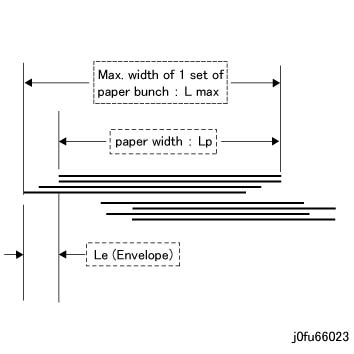
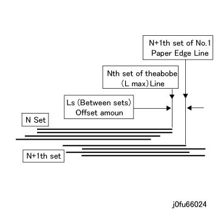

6.2.7.22 纸张 偏移 标准 
纸张 偏移 standards 是 如下所示.
[纸张 偏差 (信封) 测量 标准]

(图 1) fu66023
装订器 顶部 纸盘 引线/导向 方向 (纸张 输出)*1: Le = Lmax - Lp < = 20 mm: 95% or higher
装订器 顶部 纸盘 侧面 方向 (纸张 输出)*1: < = 40 mm: 95% or higher
装订器 堆叠器 纸盘 Non 装订 引线/导向 方向 (设置 输出): < = 15 mm: 95% or higher
装订器 堆叠器 纸盘 Non 装订 侧面 方向 (设置 输出): < = 8 mm: 95% or higher
装订器 堆叠器 纸盘 Non 装订 引线/导向 方向 (纸张 输出): < = 15 mm: 95% or higher
装订器 堆叠器 纸盘 Non 装订 侧面 方向 (纸张 输出/B5 尺寸 或更大): < = 8 mm: 95% or higher
装订器 堆叠器 纸盘 Non 装订 侧面 方向 (纸张 输出/smaller 比 B5 尺寸): < = 40 mm: 95% or higher
*1: 装订器 顶部 纸盘 适用于 纸张 和/与 curls 不 exceeding 5 mm, 和 尺寸 of 210 mm或 longer in the FS 方向 和 432 mm或 shorter in the SS 方向.
[偏移 数量 (之间 设置) 测量 标准] (at 装订器 堆叠器 纸盘 Unstapled)

(图 2) fu66024
Ls = > 25 mm (装订器 堆叠器 纸盘 Non 装订): 95 % or higher*1
Ls = > 20 mm (装订器 堆叠器 纸盘 Non 装订): 99% or higher*1
*1: Exclusive of B5 SEF or smaller/larger 比 11x17 SEF